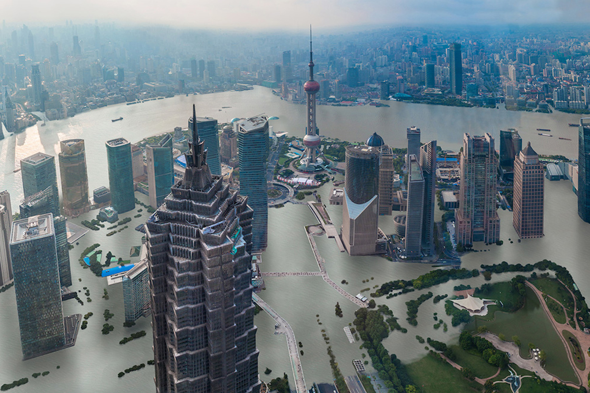

My beloved city, Shanghai... I have already spent almost 8 years of my life in this city, and i'll never get bored of it.The stunning views from anywehere along the river, the fascinating gigantic financal towers, the cute stores at every corner, and of course the endelss amount of delicious food.
Unfortunately, Shanghai is also one of the fastest sinking cities in the world. According to sources like EcoWatch, the city is sinking at a rate of around 1-2.5 cm per year. Shanghai's over-use of underground water has caused it to sink so fast, even though it switched fairly easily to using water from the Huangpu and Yangtzerivers.
As mentioned, one of the most beatiful and fascinating aspects of Shanghai are its enormous financial towers, including one of the tallest buildings in the world. However, the ground underneath these buildings can no longer withstand the substiantial weight, and the process of building has created malicious cracks in the ground, where people sometimes fall inside. As the Shanghai Skyline rises up, the city itself sinks down.
Shanghai itself is one of the most fascinating cities in the world, and having to imgine that generations in the future may never be able to experience is it saddening. New research by environmentalists is suggesting that Shanghai may be partially underwater as soon as 2050, which would be without our lifetime. It may not be as long as you think until our city looks like the picture above.